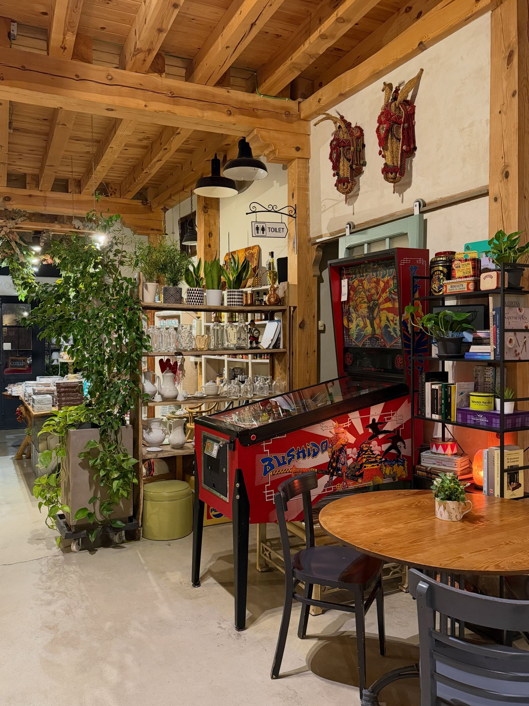
Taberna Tomasa
Taberna y tienda · Valdeprados, Segovia
Jueves a domingo · desde las 11:00
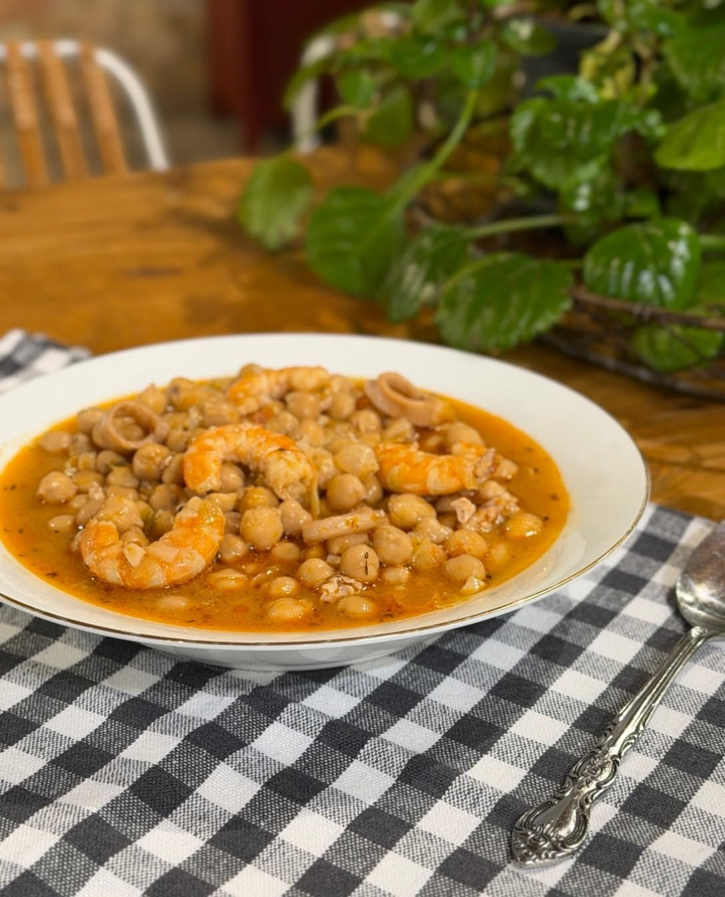
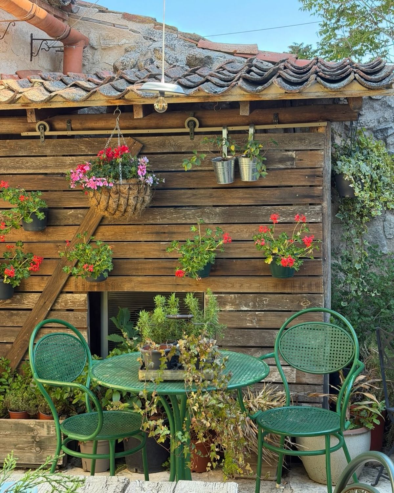
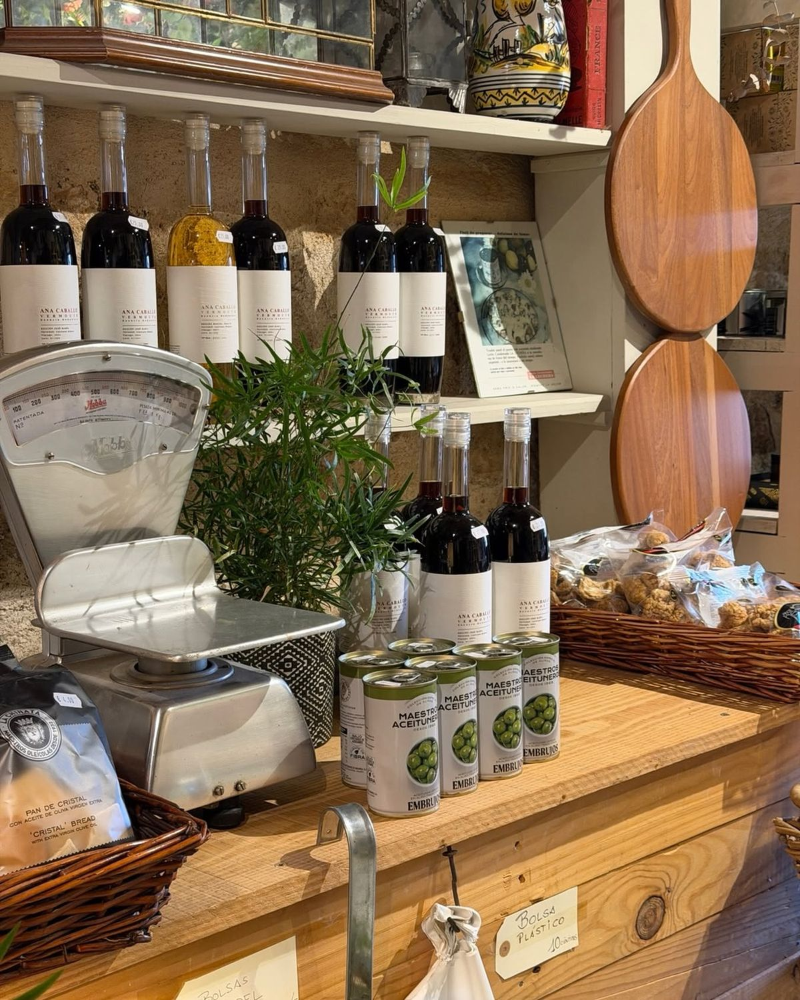
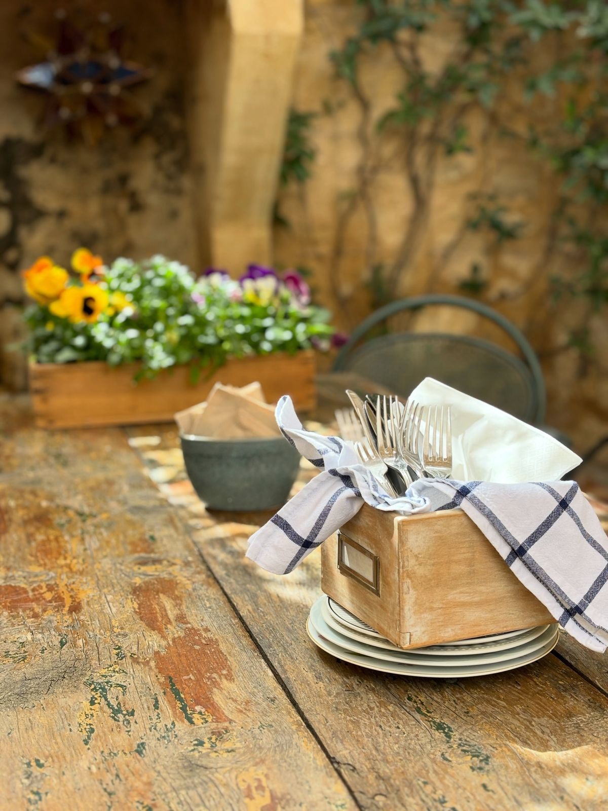
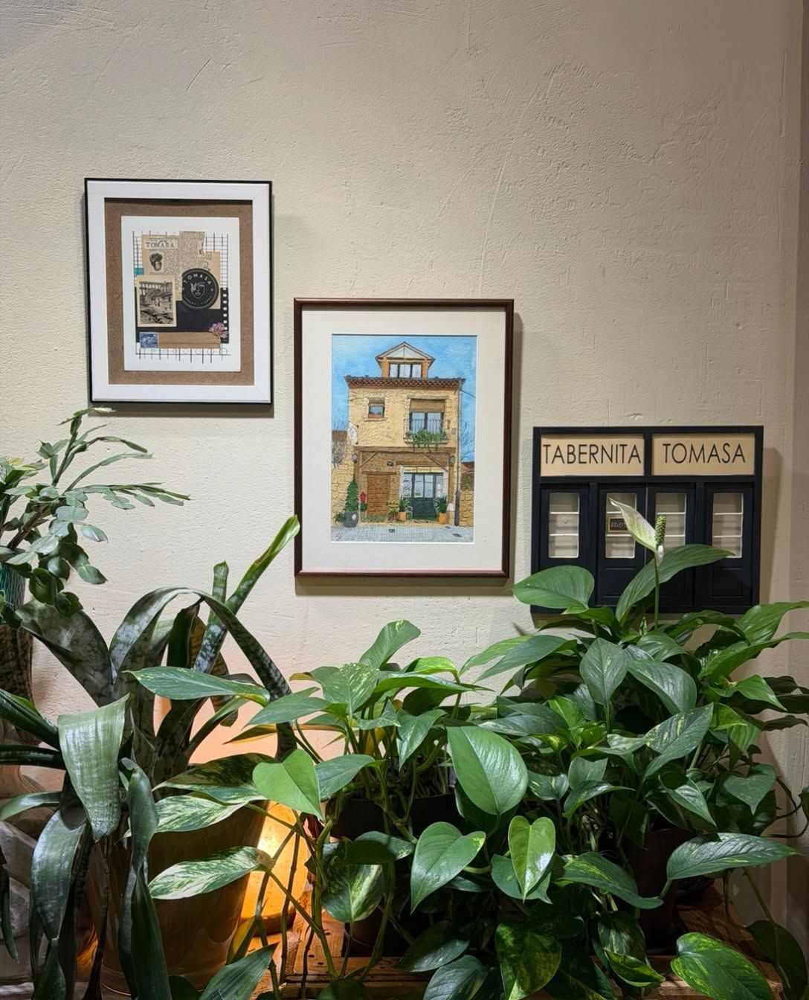
Nuestra casa
Valdeprados enamora desde la primera visita. Nosotros tenemos la suerte de vivirlo cada día del año.
Somos Victoria y Mariano, y Tomasa es nuestra taberna y también nuestra casa. Un negocio familiar en un pueblo pequeño de la sierra de Segovia, lleno de cosas que nos gustan: vigas de madera, básculas antiguas, alacenas, plantas por todas partes y un pinball que no pensamos jubilar.
Aquí se viene a compartir platos, a charlar sin prisa y a reírse un rato. Nos encanta conoceros y que os vayáis con ganas de volver. La sonrisa viene en el ADN de Taberna Tomasa.
Victoria y Mariano
La carta
Lo que cocinamos.
Comida casera, hecha aquí y pensada para compartir. Pedid varios platos al centro y preguntadnos por los fuera de carta: siempre hay algo que no está escrito.
Croquetas caseras
Las de bacalao y las que toquen ese día.
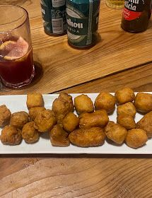
Tortilla de patatas
La hacemos al momento, jugosa.
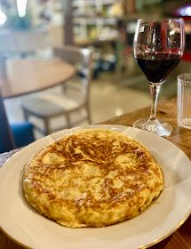
Migas extremeñas
Con su huevo frito y sus uvas.
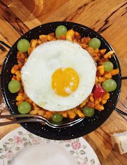
Torreznos
Crujientes por fuera, tiernos por dentro.
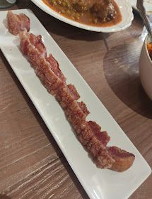
Lagarto ibérico
A la plancha, para compartir.
Nuestros guisos
Garbanzos con gambas y calamar, oreja guisada, lengua estofada.
Tabla de quesos
Quesos de la zona.
Ensalada de tomate
Tomate de temporada con queso fresco.
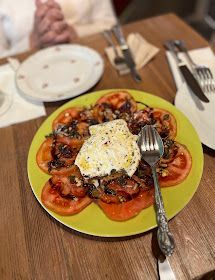
Ensalada de naranja
La que más os sorprende.
Tostas y pizarritas
Para picar con un vermut o un vino.
Latería
Conservas de nuestra tienda.
Tarta de queso
La que más nos pedís.
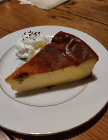
Tarta de chocolate
También la hacemos sin lactosa.
Goxua
Bizcocho, nata y crema tostada.
Escabeches caseros
Lomo y otros escabeches que preparamos aquí.
Judiones con setas
Cuchara de la sierra de Segovia.
Cochifrito
Cuando lo hay, no lo dejéis escapar.
Judías con calamares
Guiso de mar y montaña.
La carta cambia con la temporada. Tenemos postres sin lactosa y también preparamos comida para llevar.
La tienda
Antes de sentaros, pasad por la tienda.
Vermuts, conservas, aceites, dulces y cosmética natural, entre básculas y alacenas de las de antes. Para llevaros un poco de Tomasa a casa o para hacer un regalo con sabor a pueblo.
Lo que nos decís
“Desde que entramos en el local nos hicieron sentir que estábamos en nuestra casa.”
“Las migas extremeñas sublimes, al igual que la ensalada de naranja (sorprendente).”
“Fue una sorpresa y una suerte encontrar un lugar tan bonito, tan cálido, tan bien atendido y con comida tan rica.”
Dónde estamos
Calle Otero, 10. Valdeprados, Segovia.
Estamos en el centro del pueblo y podéis aparcar gratis en la calle. Llamadnos antes para reservar mesa, sobre todo si venís el fin de semana.
Cuándo abrimos
- LunesCerrado
- MartesCerrado
- MiércolesCerrado
- Jueves11:00–23:00
- Viernes11:00–23:00
- Sábado11:00–23:00
- Domingo11:00–18:00
En festivos y puentes a veces cambiamos el horario. Si tenéis dudas, llamadnos.
- Terraza
- Sí, en nuestro patio
- Para llevar
- Sí, pedídnoslo
- Accesibilidad
- Entrada, mesas y aseo adaptados
- Pago
- Tarjeta y móvil
- Aparcamiento
- Gratis en la calle
- Grupos
- Llamadnos antes